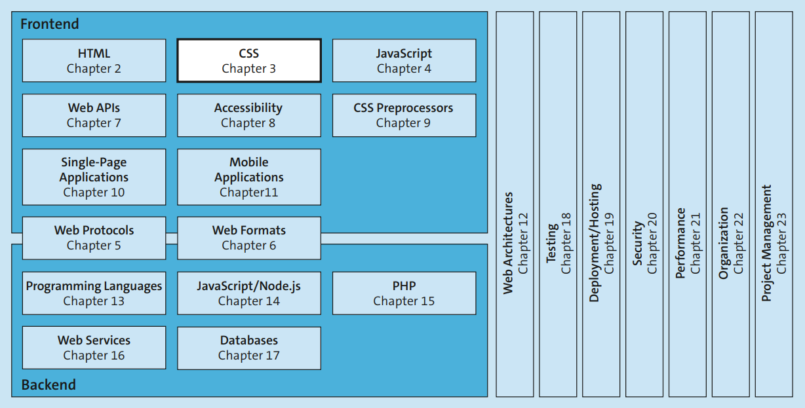
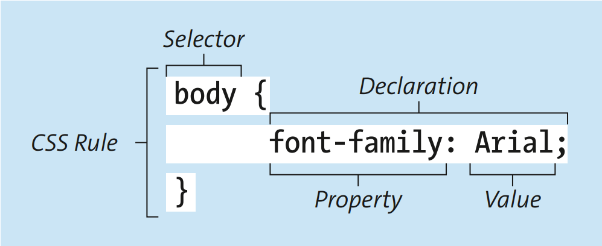

Você pode influenciar a aparência das páginas da web usando a linguagem de estilo Cascading Style Sheets (CSS).
Você pode influenciar a aparência de listas, elementos de formulário e tabelas, por exemplo, definindo os marcadores em uma lista ou determinando a cor de fundo de células individuais da tabela. Como no exemplo abaixo:

A estrutura base do css usa o seguinte estilo:

Para incluir um arquivo CSS a um arquivo HTML basta citar o local do arquivo CSS no arquivo HTML por meio da tag <link> colocada dentro da tag <head> a esturutura segue a seguinte sintaxe:
3.1 Estrutura
3.1.2 incluindo CSS ao HTML
O css pode ser incluido no html de algumas formas dentre elas podemos citar:
esse é o padrão embora o atributo type não seja muito utilizado
<link href="local do arquivo css" type="text/css" rel="stylesheet"">
Quando mais de uma regra CSS se aplica ao mesmo elemento, o navegador usa o princípio da cascata para decidir qual delas vai prevalecer. Em geral, quando duas regras têm o mesmo peso, a última definida no código tem prioridade.
No exemplo abaixo, a cor do h1 muda para verde porque a segunda regra aparece depois da primeira, mas o fundo continua amarelo, pois essa propriedade não foi sobrescrita.
h1 {
color: blue;
background-color: yellow;
}
h1 {
color: green;
}
Os seletores podem ser combinados entre si e também podem selecionar elementos por classe e por atributos. Isso permite criar regras mais específicas para partes diferentes da página.
Exemplos de seletores de classe e atributo:
.valid {
color: green;
}
a.valid {
color: green;
}
input[type="text"] {
border: 1px solid yellow;
}
Alguns valores definidos em regras CSS para elementos pai são herdados pelos elementos filhos. Por exemplo, se você definir a cor e a fonte de um elemento, os elementos dentro dele também podem receber esses mesmos estilos, a menos que outra regra seja aplicada diretamente.
Algumas propriedades, como as usadas para definir borda, normalmente não são herdadas. Se isso acontecesse, o efeito poderia se espalhar para elementos que não deveriam receber aquele estilo.
body {
font-family: 'Times New Roman', Times, serif;
}
h1, h2 {
font-family: Arial, sans-serif;
}
.author {
font-family: Verdana;
line-height: 0.3em;
text-align: right;
}